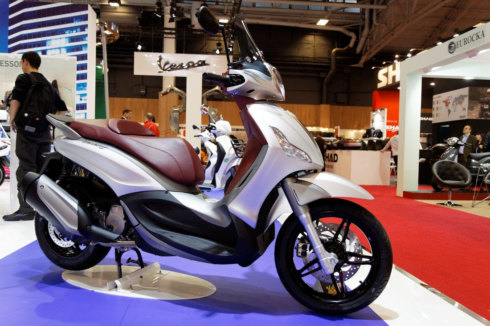
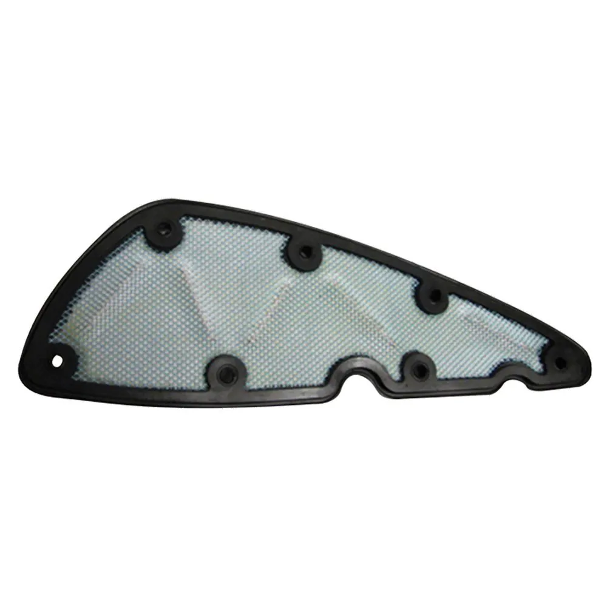

Taller › Beverly 350 Sport Touring
Taller · Mantenimiento
Piaggio Beverly 350 Sport Touring: mantenimiento y accesibilidad mecánica
Periodos de revisión, consumibles con sus tipos y precios de referencia, y dónde está cada elemento: aceite, filtros, bujía, correa, refrigerante y neumáticos.

Aclaración sobre el motor: la Beverly 350 Sport Touring (2012-2020) monta un monocilíndrico de 330 cc reales (78 x 69 mm), SOHC 4 válvulas, inyección y refrigeración líquida. El sufijo HPE corresponde a la generación actual (Beverly 300/400 HPE, 2021 en adelante). Muchos recambios sí son compartidos entre ambas.
Periodos de mantenimiento oficiales
| Intervalo | Operación |
|---|---|
| Cada uso | Comprobar nivel de aceite (varilla) |
| 1.000 km (rodaje) | Aceite de motor + filtro de aceite |
| Cada 10.000 km | Aceite (R), filtro de aceite (R), bujía (R), filtro de aire (inspección/sustitución), pastillas e inspecciones |
| Cada 20.000 km | Correa de transmisión (R), rodillos y patines del variador (R) |
| 30.000 km | Reglaje de válvulas (inspección) |
| Cada 2 años | Líquido de frenos (DOT 4) y líquido refrigerante |
Consumibles: tipos y precios de referencia

| Elemento | Tipo / referencia | Precio aprox. |
|---|---|---|
| Aceite de motor | 5W-40 o 15W-50, JASO MA/MA2 (embrague húmedo), 1,5 L | 10-16 €/L según marca |
| Filtro de aceite | OEM 880887 (compartido 350/400 HPE) | 4-7 € |
| Junta de la tapa del filtro | Ref. B018141 | ≈ 1 € |
| Filtro de aire | De repuesto de alto flujo, p. ej. Hokio para Beverly 350cc | ≈ 19 € |
| Bujía | NGK CR7EKB (rosa 10 mm, llave 16 mm, gap 0,8 mm) | ≈ 12 € |
| Correa del variador | OEM 83025R | 80-120 € |
| Rodillos del variador | 25x16 mm, 16 g, 8 uds | ≈ 30 € |
| Kit correa + rodillos + guias | Original Piaggio (1R000448) | ≈ 105 € |
| Neumático delantero | 110/70-16 (Michelin City Grip de serie) | 61-65 € |
| Neumático trasero | 150/70-14 (Michelin City Grip de serie) | 93-113 € |
| Líquido de frenos | DOT 4 (cada 2 años) | 5-10 € |
| Refrigerante | Base etilenglicol, 1,75 L (cada 2 años) | 10-15 € |
| Pastillas de freno | Delante y detrás | 20-35 €/eje (estimación) |
Accesibilidad mecánica: dónde está cada cosa
- Aceite de motor: tapón-varilla de llenado y tapón de drenaje en el cárter. Nivel entre MAX/MIN con motor frío y caballete central. Capacidad 1,5 L con filtro.
- Filtro de aceite: en el cárter, accesible desde el lateral derecho. Se cambia en cada cambio de aceite.
- Filtro de aire: tapa con 7 tornillos; se sustituye por un elemento de repuesto de alto flujo (p. ej. Hokio) sin necesidad de quitar carenados, solo el panel.
- Bujía: detrás de una portezuela en el carenado derecho (1 tornillo), motor frío. Está inclinada: enroscar a mano y apretar después.
- Variador y correa: tapa del cárter de transmisión en el lateral izquierdo de la rueda trasera, bajo la caja del filtro de aire. Se accede sin quitar carenados, solo la tapa del cárter.
- Refrigerante: vaso de expansión junto al radiador. Nunca abrir en caliente; nivel entre marcas.
Presupuesto de revisión en taller
| Revisión | Operaciones | Estimación |
|---|---|---|
| 10.000 km | Aceite + filtro aceite + bujía + inspección del filtro de aire (70 min) | 80-120 € |
| 20.000 km | Correa + rodillos + aceite + filtro + bujía (200 min) | 280-400 € |
| Kits originales Piaggio | E3 (hasta 2014) / E4 (2017 en adelante) | 148 / 184 € |
Ficha técnica del motor
| Cilindrada | 330 cc (78 x 69 mm), compresión 12:1 |
| Distribución | 4T, SOHC, 4 válvulas, inyección |
| Refrigeración | Líquida |
| Potencia | 33 CV (E3, 2012-2015) / 30,2 CV (E4, 2016-2020) |
| Par | 32,3 Nm a 6.250 rpm (E3) |
| Peso | 176-191 kg según versión |
| Depósito | 12-12,5 litros |
| Transmisión | CVT por correa, embrague multidisco en baño de aceite |
Fuentes
- Manual de taller Piaggio BV350 (manualslib)
- Motofichas — ficha Beverly 350 Sport Touring
- Wikipedia — Piaggio Beverly
- EasyParts — filtro de aceite OEM
- Repuestos de Moto — kits de revisión Piaggio
- Motardinn (tradeinn.com) — filtro de aire Hokio
Precios orientativos de tiendas online españolas (2025-2026). La revisión en concesionario y las pastillas de freno se indican como estimación: consulta siempre tu taller para el presupuesto cerrado.